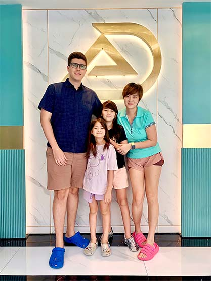
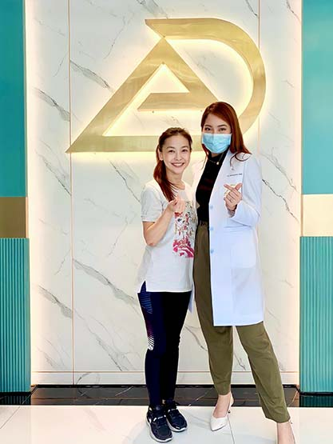
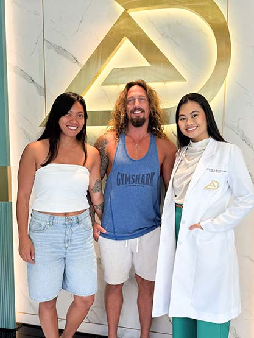
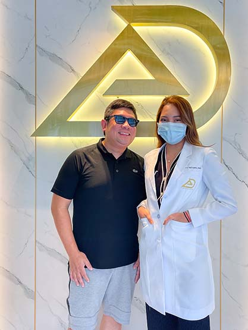
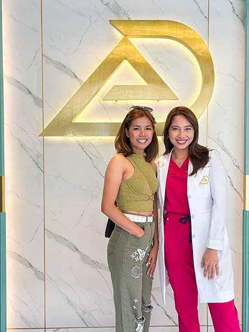

Send 01
Photographs
Clear photographs
Your teeth and your smile, taken in daylight where you can manage it.
Treatment and travel, one journey
Treatment and travel planned as one journey, with a dedicated officer.

Your treatment plan is agreed before you fly. Your dates are built around the clinical schedule, not the other way around. One named officer holds the whole journey in one place, from the first remote consultation to the recall after you are home.
The assessment that shapes your plan happens in the same building as the treatment. 3D CBCT imaging is available at all four of our Metro Manila clinics, so the diagnostics, the planning and the work are not spread across three addresses and two waiting lists.
Four clinics, Metro Manila
This page is written for two people.
The first lives overseas and is planning a trip around treatment. The second is a Filipino returning home for a defined period and wants the work finished while here. The clinical question is the same for both: does your case fit inside the time you actually have?
A compressed schedule suits
A compressed schedule does not suit

If you are in the second list
Our specialists will tell you at the assessment stage, before you book anything. That is the point of assessing first, and an email is a better place to hear it than a waiting room on the far side of the world.
Nothing is skipped to make the trip shorter.
Each step exists because the one after it depends on it. The design cannot be drawn before the records are read. The dates cannot be fixed before the design says how many appointments there are. The recall cannot be set before there is something to review.
Steps 01 to 03 happen before you fly
Before you book a flight, you send records.
Clear photographs
Your teeth and your smile, taken in daylight where you can manage it.
Any imaging you hold
Radiographs, scans or written reports from a dentist you have already seen.
Your dental history
What has been treated, when, and anything that did not go to plan.
What you want changed
In plain words. A specialist in the relevant discipline reads it.
What comes back
An indicative plan in writing. What is likely needed, in what sequence, roughly how many appointments it takes, and an indicative cost range. You can read it twice, sit on it, and ask questions before committing to a single date. You do not board a plane on a guess.
An indicative plan is built from photographs and history, and photographs do not show what sits under the enamel or inside the bone. Your plan is confirmed in person, after examination and imaging on arrival. Where the confirmed plan differs from the indicative one, you are told before treatment starts, not after.
A tooth that looks correct in isolation can look wrong in a face. Planning against the face is how that is avoided.
RayFace facial scanner
We plan veneers, crowns and smile design against the proportions of your actual face rather than against a model of your teeth alone.
iTero intraoral scanner
Your teeth are recorded digitally. No putty and no tray, and the record can be reviewed and re-sent without you sitting down again, which matters when you are on another continent.
A plan, not a promise
Together they produce a design you can look at before you commit to it. Your specialist will tell you which parts of it are settled and which depend on what is found in person.
Clinical dates are fixed first.
Laboratory turnaround and healing periods do not move to suit a flight, so everything else is arranged around them. A flight booked for the wrong day is not a saving, it is a second trip.
The Dental Tourism Officer is one named point of contact for the journey. You are not forwarded between a booking desk, a clinic reception and a treatment coordinator, and you are not repeating your case to a new person each time.
A trip is planned around the slowest step in your treatment, not the fastest.
| What is planned | Appointment blocks | One stay or two |
|---|---|---|
| Veneers and crowns | Two blocks, with laboratory time between them | The trip is built around the laboratory gap rather than compressed through it. The gap is real work happening elsewhere. |
| Root canal treatment followed by a crown | The endodontic stage, then the restoration | Often sequenced within one stay, depending on the tooth and how it responds. |
| Implant placement, then the final restoration | Two blocks separated by integration with bone | Usually split across two trips. Where that applies to you, we say so before you book the first one. |

Rest days are part of the schedule
Recovery is not an interruption to the plan, it is a line in it. You will have swelling on some days, a soft diet on others, and appointments that need you to arrive unhurried. A day left empty on purpose is the reason the day after it works.
We do not shorten a plan to make a trip look shorter. A schedule that reads well and treats badly is not a schedule.
Treatment does not end at the airport.

Aftercare in writing
What to expect in the first days, what is normal, what is not, and what to do about each. Where a temporary restoration is in place, you leave knowing how long it is meant to last and what it needs.
Review at agreed intervals
You send photographs on a schedule and the specialist who treated you reviews them, so the case stays with the person who planned it rather than starting again with a stranger.
Contact the clinic first
We can send your records, imaging and treatment notes to a dentist where you are, so whoever sees you is working from the actual case rather than from your description of it. What we cannot do is treat you from here, and we will not pretend otherwise.
Whether remediation of work completed here is covered, for how long, and on what conditions is not established. No period and no remedy is stated on this page.
An orthodontist plans orthodontics. A prosthodontist plans crowns, bridges and full-mouth restoration. An endodontist treats the inside of the tooth. An oral surgeon places the implant. A periodontist treats the gum and bone that the rest of it depends on.
They practise together. A complex case is not handed to another clinic in the middle of your stay, and you are not managing a referral in a country you do not live in. For an international patient this is the part that matters most, because a referral abroad costs a flight, not a taxi.
Every specialist is published with their discipline and their credentials, so you know who is treating you before you travel.
Which specialist sits at which clinic is not published, so this page names the discipline rather than pairing a clinician with a branch.
What the treatment costs, and what the trip costs on top of it.
What moves a treatment fee
What the treatment price does not include
Flights, accommodation, food, local transport and any experience days sit outside clinical fees. Where a travel package is confirmed as offered, what it covers will be listed explicitly, item by item, so nothing is assumed in either direction.
Your indicative range arrives with your remote assessment. Your firm quote is written after examination in person.
A starting price is published for every treatment we offer, from routine care upward.
Not estimated from photographs, and not agreed at a counter on arrival.
Every peso figure on this page is a representative market figure anchored to published ranges in Philippine dentistry, not to an Elevate price list. No Elevate price appears anywhere on this page, so read the number as an anchor for planning and nothing more.
Healing time is not dead time.
Your schedule will have gaps in it, and the gaps are deliberate. The country you are recovering in is worth seeing, and island days, cultural sites and the food are the reasons most patients extend a stay rather than fly home the morning after the last appointment.
Where an experience is arranged around your treatment, it is scheduled on a day your clinical plan can carry it, and never on a day you should be resting.
Patients are quoted as published, in their own words. Nothing is tidied, shortened or translated.
Published accounts exist from international patients, including one describing this exact journey: assessment before travel, treatment completed inside a single stay, review after returning home. That account is the honest version of what this page describes, which is why it belongs here rather than a paraphrase of it.




These photographs come from the practice's own library. No individual in them is identified, no nationality is stated, and no treatment or outcome is attached to any face.
All four clinics sit inside established Metro Manila retail developments, so food, a pharmacy and somewhere to sit quietly afterwards are in the same building as your appointment. Two are in BGC, Taguig. One is in Ortigas, Mandaluyong. One is in Ayala Alabang, Muntinlupa.
| Clinic | Address | Open | Direct line |
|---|---|---|---|
| Mitsukoshi BGC | 2F Mitsukoshi BGC, 8th Ave cor 36th St, Grand Central Park, Taguig. | Mon to Fri 11:00 to 20:00. Sat and Sun 10:30 to 20:00. | +63 917 159 9284 |
| Shangri-La Plaza | 4F East Wing, EDSA cor Shaw Blvd, Ortigas, Mandaluyong. | Mon to Sun 10:30 to 19:00. | +63 968 851 5420 |
| Bonifacio Stopover BGC | Unit R303, 3rd Floor, Bonifacio Stopover Pavilion, BGC, Taguig. | Mon to Sat 09:00 to 18:00. Closed Sunday. | +63 917 829 4551 |
| Alabang Town Center | 2nd Floor, 2225 Commerce Mall, Alabang Town Center, Ayala Alabang, Muntinlupa 1780. | Mon to Fri 11:00 to 20:00. Sat and Sun 10:00 to 20:00. | +63 917 114 0598 |
How payment works
Elevate Dental does not accept HMO or dental insurance. All treatment is self-pay. HMO coverage cannot be used for dental treatments at our clinics. You pay the clinic directly, per treatment, after your plan is agreed and quoted.
Language
Consultations, treatment plans and written quotes are in English.

Tell us four things and the assessment can begin before you travel.
Your enquiry goes to the Dental Tourism Officer, who stays with your case from the first reply to the recall after you are home. If you would rather speak to a clinic directly, every direct line is listed above.

Outcome